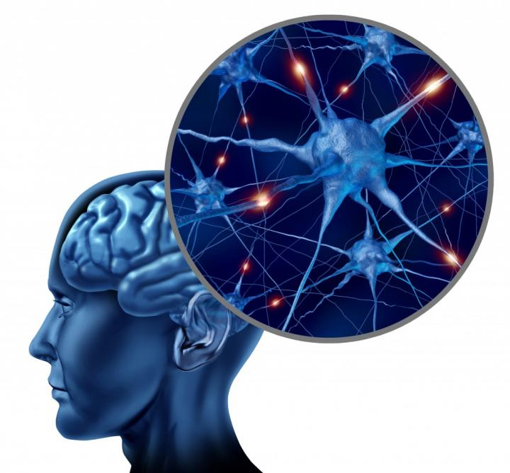
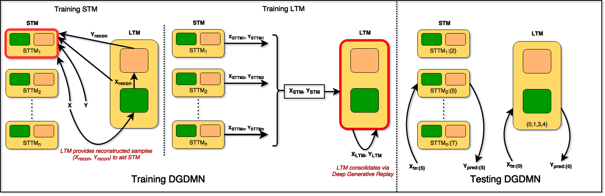

Deep Generative Dual Memory Network for Continual LearningNitin Kamra, Umang Gupta, Yan Liu Posted on November 27, 2017 TL;DR: A dual memory architecture inspired from human brain to learn sequentially incoming tasks, while averting catastrophic forgetting. This post summarizes our paper Deep Generative Dual Memory Network for Continual Learning. We present a method to learn tasks sequentially without forgetting previous ones, inspired by the human brain.  Image credits: http://www.sciencecodex.com/files/040215%20Modular%20brains.jpg Catastrophic ForgettingNeural networks suffer from catastrophic forgetting—they forget previously learned knowledge when trained on new tasks. To solve this, a system must be able to learn continuously from incoming data without needing to store and retrain on all past data. Neuroscientific evidence suggests the human brain avoids this using Complementary Learning Systems (hippocampus for rapid learning, neocortex for long-term consolidation) and Experience Replay (consolidating memories during sleep). We mimic this structure to enable continual learning in AI. Formal SetupWe address sequential multitask learning, where a model learns a sequence of tasks \(\mathbb{T}\) one by one. The goal is to minimize test loss on all tasks seen so far, assuming a finite memory (\(N_{max}\)) that prevents storing all training examples. Deep Generative Dual Memory Network (DGDMN)We propose the DGDMN, a dual-memory model comprising:
 Figure 2: Deep Generative Dual Memory Network Generative Experience Replay: Instead of storing raw samples, we use generative models (VAEs) to store and replay experiences. This allows us to generate representative samples of past tasks within a fixed memory budget. The Learning Cycle:
ResultsWe evaluated DGDMN on sequential image classification tasks (Permnist, Digits, TDigits) against baselines like EWC and Pseudopattern Rehearsal (PPR).
Figure 3: Accuracy curves. DGDMN (c, f) retains performance on previous tasks significantly better than baselines. Performance: DGDMN consistently outperforms baselines, retaining higher average accuracy on previous tasks. Unlike EWC which stagnates, or standard networks which catastrophically forget, DGDMN's dual memory allows it to learn new tasks while preserving old ones (Figure 3 & 4).
Figure 4: Average forgetting curves. DGDMN maintains higher average accuracy as more tasks are added. Long Sequences and Training Time: On a longer sequence of 40 tasks (TDigits), DGDMN shows much more gradual forgetting compared to a single Deep Generative Replay (DGR) model. Crucially, DGDMN is an order of magnitude faster to train (Figure 5c) because it consolidates to LTM only periodically, rather than after every task.
Figure 5: DGDMN vs DGR on 40 tasks. DGDMN forgets slower and trains much faster. Robustness: Using VAEs provides resilience to noise and occlusion. The reconstruction step acts as a denoiser, allowing the model to recognize corrupted inputs better than standard networks (Figure 6).
Figure 6: Robustness to noise and occlusion. ConclusionDGDMN successfully emulates the human brain's dual memory system to learn sequentially without catastrophic forgetting. By combining an STM for fast learning and an LTM for consolidated knowledge, supported by generative replay, it offers a robust and efficient solution for continual learning. References
[Kirkpatrick et al., 2017] Overcoming catastrophic forgetting in neural
networks. PNAS. |